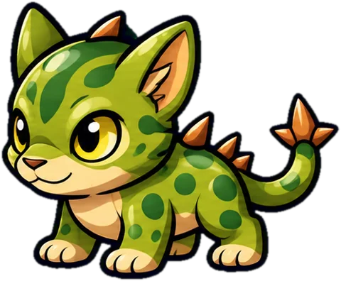

 GrassFight
GrassFightTap a stage to read its story.
Spotmew is a small spotted green-and-tan kitten with round luminous eyes, a compact body, and a short tail. Its spots are olive-dark on a bright grass-green coat, and two tiny raised scale ridges run along its back - just the beginning of something armoured. It was born on the cooler outer slopes of the lava crater, where the heat from below makes the grass grow tall and unusually tough. It plays in the grass verges, pouncing on lava beetles and carrying them three steps before letting them go.
Field note: Spotmew's spots are slightly warm to the touch - warmer on the left side than the right, for reasons no one has confirmed.
Lava Crater. Spotmew and its family are found in the Lava Crater. See everyone who lives there.
Share a Bond Food that matches its types to become friends. Spotmew loves:
A Bond Food is not a trick. It joins your spirit with the Kimuro's spirit, and only when it chooses you.
Print the Kimuro adventure packs: mazes, cards, a board game and Bond Mark medals.
See the printable packs